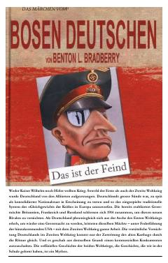

DMIkkinchi jahon urushi va Germaniya tarixi haqidagi muqobil tarixiy qarashlar to'plami.
Ushbu kitob Birinchi va Ikkinchi jahon urushlari haqidagi an'anaviy tarixiy qarashlarni qayta ko'rib chiqishga urinadi. Muallif Germaniyaning urushlardagi roli va ittifoqchilarning siyosati bo'yicha muqobil nuqtai nazarni taqdim etadi.